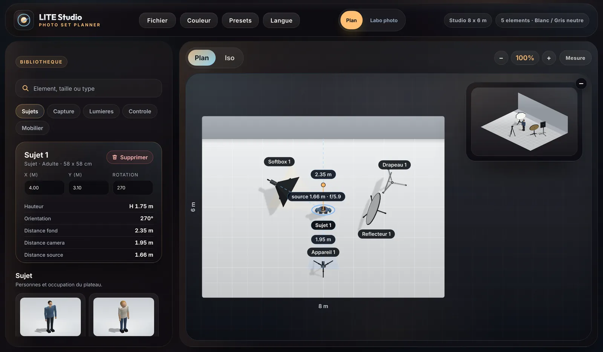
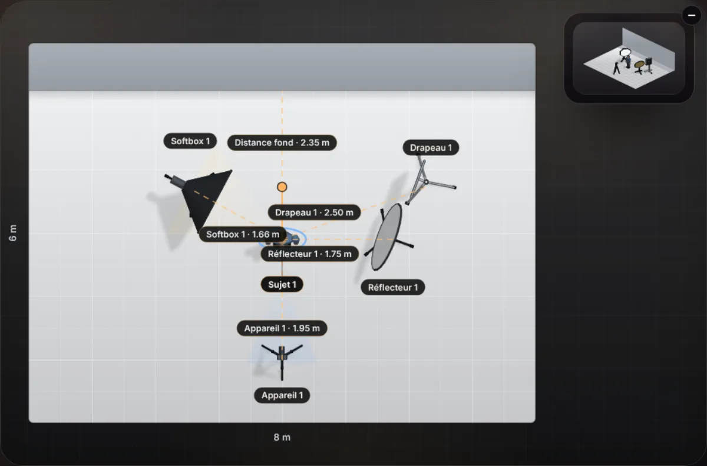
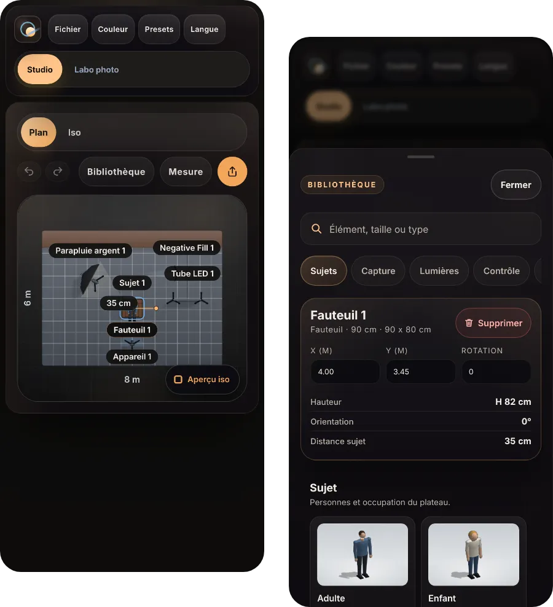

Schema d'eclairage portrait
Une base portrait studio avec key light a 45 degres, mesures utiles et export propre en PDF.

Planificateur de studio photo
Placez sujet, appareil, lumières et accessoires sur un plan à l'échelle. LITE Studio calcule les distances, montre la scène en 3D et exporte un schéma clair à envoyer à l'équipe.

Comment ça marche
Choisissez parmi 46 scènes types (portrait, beauté, produit, boudoir, interview…) ou commencez sur un plateau vide de 8 × 6 m.
Ajoutez le matériel depuis la bibliothèque, déplacez-le à la souris ou au doigt et tournez-le avec la poignée orange. Chaque élément a ses vraies dimensions.
Le mode Mesure affiche les distances utiles. Exportez ensuite le plan en PNG ou en PDF, ou copiez l'image pour l'envoyer directement.
Ce que fait LITE Studio
Plan et vue 3D
Softbox, parapluies, pieds C-stand, réflecteurs, mobilier : les 80 éléments de la bibliothèque sont modélisés à leurs vraies dimensions. Passez de la vue de dessus à la vue 3D pour juger les volumes et la place autour du sujet.

Mesures
Activez Mesure : LITE Studio affiche la distance entre le sujet et le fond, l'appareil et chaque source, avec une estimation de l'ouverture à ISO 100 pour la lumière principale. Vous pouvez aussi tracer vos propres mesures, point à point.

Labo photo
Changez l'ISO, l'ouverture et la focale, et observez aussitôt le résultat sur une photo : bruit, exposition, profondeur de champ et cadrage. Le mode Compare place l'image de référence à côté de votre réglage.

Sur le plateau
Sur tablette et téléphone, l'interface se resserre : la bibliothèque s'ouvre en panneau, le plan se zoome au pincement et tous les boutons restent faciles à toucher. Vos presets personnels restent enregistrés dans le navigateur.

Presets
Chaque preset est un point de départ crédible : chargez-le, adaptez-le à votre studio, puis enregistrez votre propre version.
Gratuit, sans compte à créer, rien à installer. Ouvrez l'application et chargez un preset pour essayer.
Pour aller plus loin
Exemples de pages utiles
Chaque page ci-dessous sert a la fois de contenu explicatif et de raccourci vers l'application avec une base deja chargee.
Une base portrait studio avec key light a 45 degres, mesures utiles et export propre en PDF.
Mobilier, ambiance, fond, distance au fond et circulation pour preparer une seance boudoir studio.
Un setup video studio clair avec distance camera sujet, panneaux LED et export rapide pour le brief.